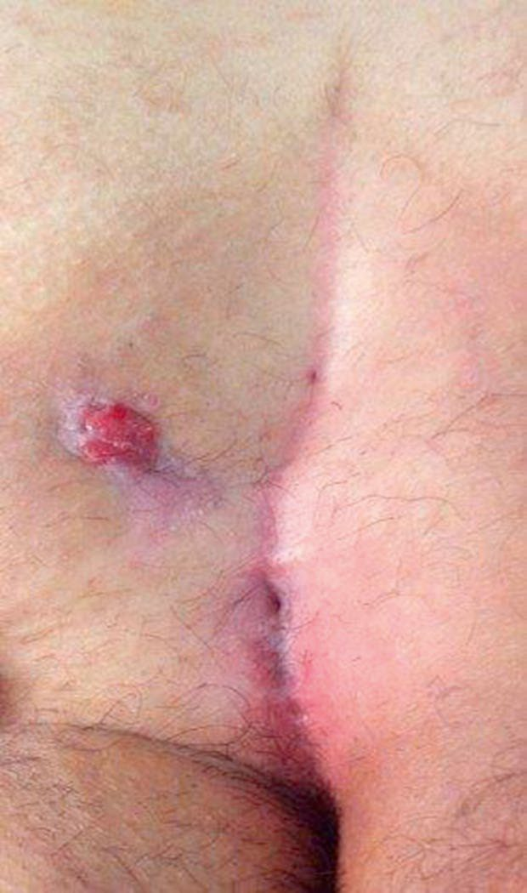
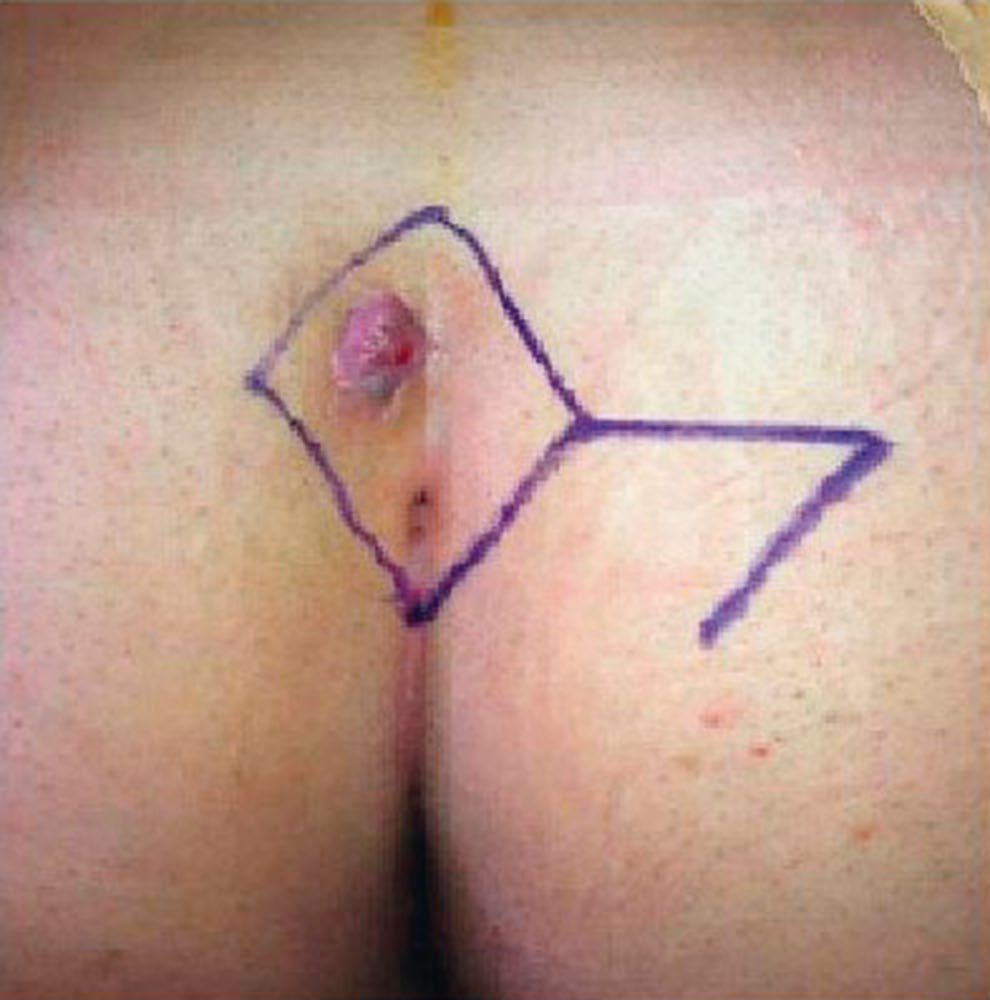
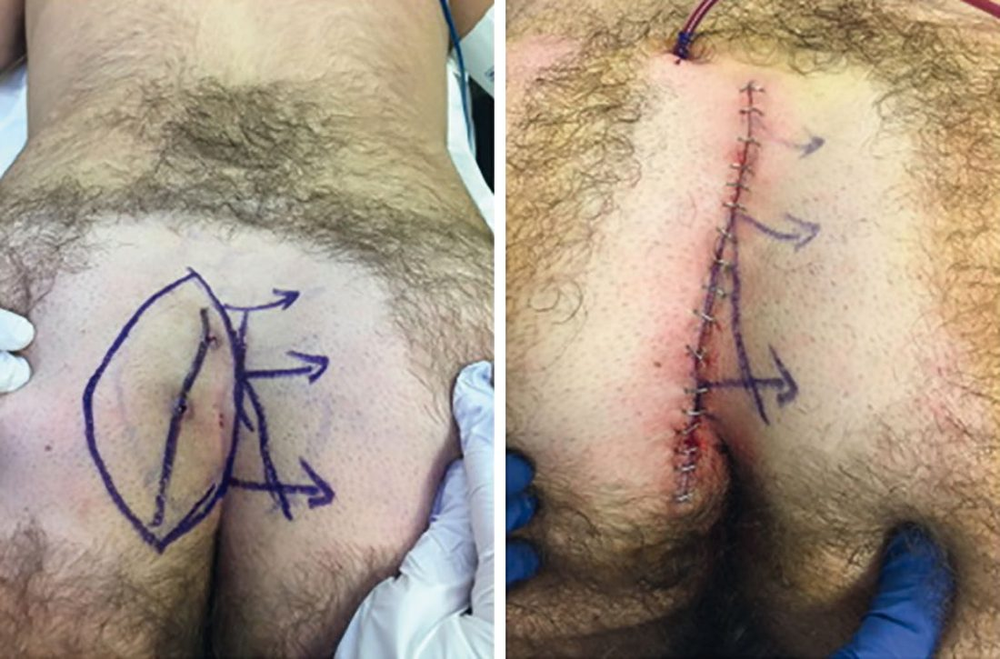

Pilonidal Disease
Summary
- Pilonidal sinus disease is a chronic condition of the natal cleft overlying the coccyx, consisting of one or more midline openings communicating with a hair-containing granulation-tissue-lined track, commonest in hirsute young men [1].
- It typically presents with intermittent pain, swelling and discharge, and recurrent acute abscesses [1].
- Management ranges from conservative hygiene measures and abscess drainage through to definitive excisional surgery, with off-midline closure techniques reducing recurrence compared with midline closure [1].
There is no NICE guideline on pilonidal disease, but NICE has appraised the newest technique and endorsed it under the permissive formula: "Current evidence on endoscopic ablation for a pilonidal sinus raises no major safety concerns and the evidence on efficacy is adequate in quality and quantity. Therefore, this procedure can be used provided that standard arrangements are in place for clinical governance, consent and audit." [2]. The guidance was published on 17 April 2019 and migrated from interventional procedures guidance IPG646 [2].
Definition
Pilonidal sinus describes a condition in the natal cleft overlying the coccyx, consisting of one or more, usually non-infected, midline openings that communicate with a fibrous track lined by granulation tissue and containing hair lying loosely within the lumen [1].
Pathophysiology
- Acquired theories of development are better supported than historical congenital theories.
- Supporting evidence includes: interdigital pilonidal sinus as an occupational disease of hairdressers; onset at an age older than expected for a congenital lesion; the rarity of hair follicles in the sinus wall; hair ends pointing towards the blind end of the sinus; predominance in hirsute men; and recurrence even after adequate excision [1].
- The favoured mechanism is that buttock friction and shearing forces allow shed or broken hairs to drill through midline skin, or that follicular infection permits hair entry via suction created by buttock movement, creating a subcutaneous chronically infected midline track from which secondary tracks may spread laterally to discharge through granulation-tissue-lined openings; the sinus usually runs cephalad [1].
- Carcinoma arising in chronic pilonidal disease is exceedingly rare [1].
Sabiston states the mechanism in the same terms and adds the physical explanation: as the Latin origin of the name suggests (pilus, hair, and nidus, nest) the disease is caused by shed hair drawn into the natal cleft by the anatomy of the cleft and the motion of the buttocks, which creates a vacuum effect forcing loose hair into the skin through cutaneous midline pits [3]. The presence of midline natal cleft pits and sinus openings is the hallmark finding, and some pits are noted incidentally without inflammation or infection. The foreign body reaction to trapped hair produces local inflammation that may become superinfected, forming a hair-filled abscess cavity which drains spontaneously through the skin at the midline or to either side through sinus tracts, a location distinctly different from a perirectal abscess, which is typically found near the anus [3].
Clinical features
- The condition is seen much more often in men than women, usually after puberty and before the fourth decade, and is characteristically seen in dark-haired rather than fair-haired individuals [1].
- Patients complain of intermittent pain, swelling and discharge at the base of the spine with little constitutional upset, often with a history of repeated abscesses that have burst spontaneously or been incised away from the midline [1].
- The primary sinus has one or more openings strictly in the midline between the sacrococcygeal joint and the tip of the coccyx; if primary pits are absent, or drainage is lateral to the sacrum or caudal to the primary pits, alternative diagnoses (hidradenitis suppurativa, complex anal fistula, osteomyelitis with draining sinuses, tuberculosis, actinomycosis) should be considered [1].
- Recognised clinical patterns are: irritative features (intermittent discharge, inflammation, pain and swelling); acute sepsis (abscess formation with swelling, pain and erythema, which may discharge spontaneously or fistulate laterally); and chronic sepsis (usually following unresolved acute sepsis) [4].

Etiology
Risk factors include male sex, dark coarse hair, hirsutism, and occupations or activities involving prolonged sitting (lorry drivers, computer operators), which are thought to predispose via local trauma and hair retention in midline pits [1][4]. Pilonidal disease typically affects young people in their middle to late 20s and is estimated to affect approximately 70,000 patients annually in the United States; males are at higher risk because they tend to be more hirsute, and other associations are obesity, sedentary occupation, and local irritation or trauma [3].
Diagnosis
Diagnosis is clinical, based on the characteristic midline pit(s) in the natal cleft. Patients should be tested for occult diabetes mellitus; MRI of the natal cleft and buttocks may be used to assess very extensive sinus formation and fistulation [4].
Scoring and Severity
There is no formal grading system for pilonidal disease in the source texts. Disease is described descriptively, asymptomatic or minimally symptomatic midline pits, acute abscess, chronic discharging sinus, or recurrent and extensive disease, and treatment should be tailored to the severity of the disease rather than applied uniformly [1][3].
The one quantitative fact that bears on management across all severities is bacteriological: bacterial colonisation ranges from 50% to 70%, with typical isolates being Staphylococcus aureus and anaerobes such as Bacteroides, which is why antibiotics are an important adjunct to surgical treatment [3].
Treatment and Management
- Conservative treatment: pilonidal sinus disease tends to regress over time; for minimal symptoms, cleaning of tracks, removal of hair, regular hair exfoliation and strict hygiene are recommended, with silver nitrate cauterisation or laser coagulation of tracks an option in less complex disease [1][4].
- Intermittent antibiotic courses may be needed for septic episodes [4]. Acute exacerbation (abscess): drainage through a small longitudinal incision off the midline over the abscess, with thorough curettage of granulation tissue and hair, may achieve complete resolution [1][5].
- Recurrent acute sepsis or persistent symptomatic chronic sepsis usually requires definitive surgical treatment [4].
Sabiston's account of acute abscess management adds two technical rules. A lateral incision avoiding the midline should be made over the most fluctuant portion of the cavity wherever possible, to facilitate wound healing; and the cavity should be thoroughly curetted, removing all embedded hair and devitalised tissue [3]. Hair removal by trimming, shaving, waxing or laser depilation has been shown to be effective in decreasing recurrence rates [3].
Surgeries
Principles of surgical treatment are excision of all sinus openings, obliteration of infected/chronically inflamed tissue, and flattening of the natal cleft, thought to be important in preventing recurrence by reducing further hair implantation [4]. There is no single surgical technique of proven overall superiority; choice is influenced by time off work, recurrence rate and surgeon preference [1].
- Laying open of all tracks with or without marsupialisation, healing by secondary intention: has lower recurrence but slower healing than primary closure techniques [1][4].
- Excision with primary closure (midline or off-midline): off-midline closure techniques, the Karydakis procedure (off-midline incision around the sinus complex, excision, and a contralateral flap mobilised for tension-free off-midline closure) and the Limberg flap (rhomboid excision with a rotated flap), achieve lower recurrence and faster healing than midline closure [1].

- Bascom's procedure: a lateral incision to access and clear the sinus cavity of hair and granulation tissue, with excision and closure of the midline pits and the lateral wound left open to heal secondarily; recurrence or failure to heal is treated by a flap or cleft-lift procedure (also described by Bascom) [1].

- Gips procedure: excision of the pilonidal pits with debridement of the abscess cavity and sinus tracts, a less invasive alternative to complete excision, developed by Moshe Gips [3].
- Other options include Z-plasty flaps [1][4]. Postoperative wound care centres on eliminating hair (ingrown, local or shed) from the healing wound regardless of technique chosen [1].
Whatever is excised, the closure matters more than the excision. The importance of avoiding midline closure was popularised by John Bascom, who advocated a lateral incision over the sinus cavity together with excision of the midline pits and sinus tracts; after excision the cavity may be left open to heal by secondary intention, dressed with negative-pressure therapy, or closed by one of several techniques [3]. Complex, extensive disease may require transposition of healthy, well-vascularised tissue to close the defect (the Bascom cleft lift, Z-plasty, V-to-Y advancement flap, or Limberg flap) with a drain left to prevent postoperative seroma or haematoma [3].
Endoscopic ablation for a pilonidal sinus is the newer, minimally invasive alternative to excisional surgery, and NICE has placed it in the permissive tier. "Current evidence on endoscopic ablation for a pilonidal sinus raises no major safety concerns and the evidence on efficacy is adequate in quality and quantity. Therefore, this procedure can be used provided that standard arrangements are in place for clinical governance, consent and audit." [2].
"Standard arrangements" is the key phrase. It places endoscopic pilonidal ablation alongside bioprosthetic plug insertion for anal fistula and haemorrhoidal artery ligation as procedures that need no special governance, and distinguishes it from radially emitting laser treatment of anal fistula and laparoscopic ventral mesh rectopexy, both of which require special arrangements [2].
Complications
Recurrent acute abscess formation, chronic discharging sinus, and lateral fistulation to the buttock tissue are the principal complications of untreated or incompletely treated disease [1][4]. Postoperative wound infection and non-healing (particularly with midline primary closure) contribute to recurrence [1].
Prognosis
- Recurrence rates vary by technique: open healing gives lower recurrence but slower healing than primary closure; among primary closure techniques, off-midline closure achieves lower recurrence and faster healing than midline closure [1].
- No single technique has proven overall superiority, and no unified long-term prognostic statistic is given in the source texts; disease behaviour is described as tending to regress with conservative measures in mild cases [1].
- The one intervention with consistent evidence for reducing recurrence is not an operation at all: hair removal by trimming, shaving, waxing or laser depilation [3].
References
- Bailey & Love's Short Practice of Surgery, 28th ed., Ch. 80 The anus and anal canal
- NICE HealthTech Guidance HTG507: Endoscopic ablation for a pilonidal sinus (2019, migrated from IPG646), 1.1; Overview www.nice.org.uk
- Sabiston Textbook of Surgery, 22nd ed., Ch. 97 Benign Anorectal Disorders
- Oxford Handbook of Clinical Surgery, 5th ed., Ch. 12 Colorectal surgery
- The ABSITE Review, 2022, Anorectal Disorders